Toda Lab Project Soka University Faculty of Engineering
II. Environmental Technology
A) Research on reducing environmental burden from human activities
- Digestion on food waste by circulating sludge
- 1. Promotion of efficient methane fermentation process using algal biomass(-2013)
- Development of raw-garbage disposal process using the Upflow Anaerobic Sludge Blanket (UASB) method (-2013)
- 2. Study on leachate at the Benowo landfill in Surabaya city, Indonesia(-2013)
- Evaluation of environmental impacts of an organic waste treatment through Life Cycle Assessment (LCA) (-2013)
B) Multi-functional microalgal utilization
- Study on the wastewater treatment using algal-bacterial consortia
- Mass cultivation of microalgae for production of valuable products (-2013)
A) Research on reducing environmental burden from human activities
We are examining how to utilize microbes and phytoplankton for decomposition of human-caused organic substances, such as filthy water and raw garbage discharged from urban environments. We also investigate how to efficiently extract energy from organic substances by using methane fermentation. These studies are relevant to the research on biomass energy, which is expected to be utilized in a recycle-oriented society.
I.Digestion on food waste by circulating sludge
In Japan, an annual emission of solid organic waste like food waste comes to almost 20 million tons, and its treatment has been quite problematic. Methane fermentation is receiving particular attention as an energy-producing treatment method of organic waste, because it is accompanied by the production of utilizable energy, methane gas. Wet-methane-fermentation treatment method is especially useful, because it allows solid organic waste to be directly thrown into its process. Indeed, improving this method is an important research theme in this laboratory, because various microbial communities are involved in processes of wet-methane-fermentation, such as hydrolysis, acid production, and methane production. In order to stably process the treatment method by stabilizing bacterial density, we have investigated how to maintain concentrated bacterial density in a wet-methane-fermentation reactor.
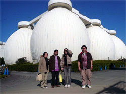
North-Yokohama sludge recycling center, which provides us with sludge for research
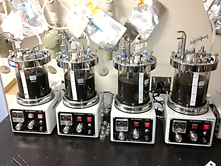
Conducting the continuous high-load methane fermentation disposal
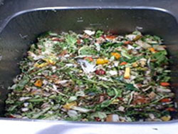
Collected food waste (they're still fresh and might be still edible.)

Crushed food waste
In anaerobic digestion, various microorganisms contribute to hydrolysis, acidogenesis, and methane fermentation processes, and it is necessary to maintain stable microorganism concentration in order to achieve steady waste treatment. Our laboratory has achieved a stable methane fermentation with 2 to 5-fold higher organic loading rate than standard fermentation method by recirculating sludge, containing microorgasms, back to the reactor (Right figure: Nagao et al., 2012). Furthermore, we found that by creating "resting period", during which substrate supply is stopped, the microorganism concentration increases dramatically. Currently, we are aiming to reveal the mechanism behind the microorganism growth during resting period by studying the relationship between growth and digestate characteristics.
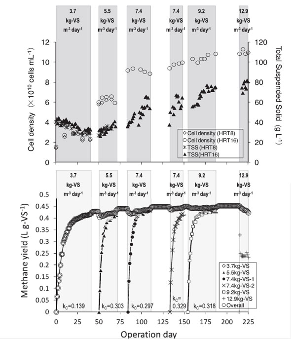
Time-series of microbial cell density and total
suspended solid (TSS).
During resting periods (white areas), increase in
microbial cell density was observed.
Time-series of methane production rate.
High methane production was maintained even with
high organic loading rate (Nagao et al., 2012)
II. Promotion of efficient methane fermentation process using algal biomass(-2013)
Due to eutrophication caused by population growth, mass
generation of marine algae has been observed globally in
recent years. Marine algae are washed ashore and cause a
variety of environmental problems by deteriorating scenery
and producing foul odors. Moreover, such drifted wastes have
high moisture content and cost too much to burn them up.
Aquatic biomass, including such algae, contains a lot of
organic substances which are utilizable as biomass energy.
However, aquatic biomass is inadequate for biological
processing like methane fermentation, because persistent
substances cause the decrease of decomposition rate,
followed by a drop in biogas recovery efficiency. In order
to improve the waste decomposition rate, it is imperative to
increase substrate availability of microbes which are active
in the methane fermentation process. Therefore, we are
investigated how pulverizing aquatic biomass could
contribute to improve energy recovery efficiency.
Algal biomass attracts attention not only for its
importance in the waste disposal process, but also for its
high productivity. Chlorella zofingiensis, a
species of green algae, shows high cell multiplication rate
and accumulates astaxanthin that is a useful substance with
high commercial value. Establishing an efficient culture
method of commercially high-value phytoplankton is
instrumental for producing utilizable substances and energy,
and this had been another research topic in this laboratory.
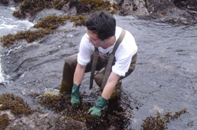
Collecting marine algae
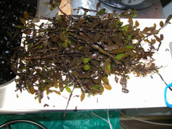
Algae looks like this before treatment
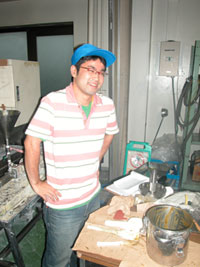
Pulverizing algae is a quite tough work...
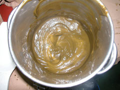
Algae processed to a paste
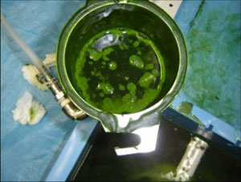
Pulverized chlorella, a type of phytoplankton
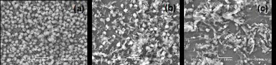
SEM photos of chlorella pulverized by a bead mill
(2,000 magnifications)
(a) not pulverized, (b) bead filling rate 50%,
pulverized for 10 mins, (c) bead filling rate 50%,
pulverized for 20 mins
III.Development of raw-garbage disposal process using the Upflow Anaerobic Sludge Blanket (UASB) method (-2013)
The UASB is a mid-to-high-concentrative method of sewage
disposal through which methane gas is retrievable. The UASB
triggers self-granulation of microbial community involved in
methane fermentation and form granules of 0.5-2.0 mm in
diameter in the sludge. Granules have excellent
sedimentation properties and hold highly concentrated
microbes, so it is useful for heavily-loaded operations. For
these practical characteristics, the USAB has been globally
adopted since the 1980s. Using this method, we have
conducted a research aiming to recover methane gas from raw
garbage.
However, the UASB is not suitable for
treating solid waste. It is more useful for disposal of
moist waste. In order to make solid raw garbage applicable
for the UASB, we solubilized them and lower its solid
concentration. After that, we disposed raw garbage through
the USAB method and investigated methane gas recovery in the
process. Also, in order to formulate granules appropriate
for raw-garbage-effluent disposal, we studied granule
production from digestive sludge using raw-garbage effluent.
In addition, in Japan, where its land is surrounded by the
ocean, fishing is an important industry and high-salinity
effluent is discharged from the processing plants of marine
products. From this perspective, salinity resistance of
granules had been also studied in this laboratory.
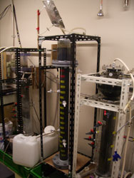
Three UASB reactors are used for experiments in this
lab
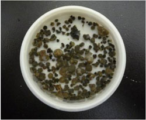
Granule produced by long-term granulation of raw
garbage
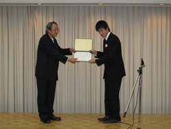
Kouji Yonemoto from Class of 2007 (MA) received the
Excellent Poster Award
at the 20th annual meeting of the Japan Society of Material Cycles and Waste Management.
at the 20th annual meeting of the Japan Society of Material Cycles and Waste Management.
IV.2. Study on leachate at the Benowo landfill in Surabaya city, Indonesia(-2013)
In Japan, nearly 78% of waste winds up in a landfill after
incineration. Meanwhile, in many developing countries like
Indonesia, wastes are not sorted, and industrial discharges
are directly dumped in landfills. Due to this inappropriate
waste treatment, organic matters within the disposed wastes
are biodegraded in the landfill, and greenhouse gas, such as
CO2 and Methane, are emitted. Moreover, rainfall
on the landfill produces leachate with dissolved waste
constituents. Because most landfills in developing countries
do not have facilities for gas recovery, water stop or
leachate treatment, discharges from landfills have been
causes of environmental problems as they accelerate global
warming and contaminate groundwater and the ocean.
Soka University had undertaken a joint study with
Surabaya Institute of Technology (ITS) since 2004. Through
this joint study, we aimed to develop a low-cost leachate
treatment which is feasible for developing countries.
Studies have been investigating chemical quality of leachate
from the Benowo landfill.
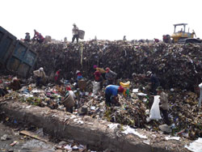
Scavengers, people who sort wastes at a landfill
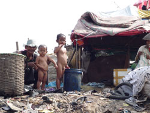
Children are living in a landfill
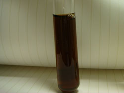
Leachate produced from the Benowo landfill
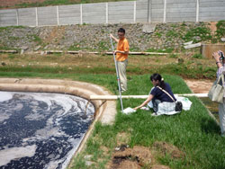
Sampling leachate
V. Evaluation of environmental impacts of an organic waste treatment through Life Cycle Assessment (LCA) (-2013)
The LCA is a method which quantitatively evaluates environmental impacts of a product/system by looking at its whole process from production to disposal. Adopting this method to assess environmental effects of a disposal process helps us to specify a more appropriate and environmental-friendly disposal method. In Japan, nearly 80% of domestic waste is incinerated, the recycling rate of organic waste, such as food waste, only remains about 9%. In such situation, the Food Recycling Law became effective in 2001 (amended later in 2007), and a recognition system of "food loop" was established. This is a food-recycling process in which food waste is locally processed into composts or feeds and bought by local food-related companies for their businesses. In this way, "local production for local consumption" is further encouraged. Not only important for promoting food waste recycling, comprehensive evaluations like the LCA are also important to specify and establish an appropriate eco-friendly disposal process to realize a low-carbon society. Focusing on this food loop, we were assessing environmental and economic effects of food-waste disposal process. By doing so, we comprehensively evaluated environmental effects of food loop and find out its advantages and disadvantages.
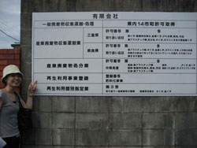
We visited a composting facility
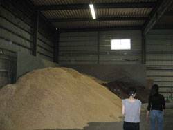
Observing the condition of the composting
facility
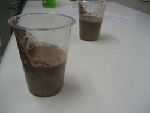
Feeds processed from raw garbage
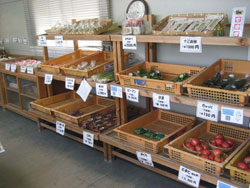
Vegetables raised with raw-garbage composts are
well-grown and tasty
B) Multi-functional microalgal utilization
Microalgae are superior to terrestrial plants in terms of carbon dioxide assimilation rate, and therefore algal biomass can be produced effectively incorporating nutrients from organic wastewater. Microalgae also produce fatty acids, protein, and carotenoid that can be transformed into medical, cosmetic, health, and feeding products. Currently, our laboratory focuses on both biomass production and wastewater treatment using microalgae.
I. Study on the wastewater treatment using algal-bacterial consortia
Activated sludge processes are widely used wastewater treatment using aerobic bacteria. However, it requires a large amount of cost and energy due to mechanical aeration for O2 supply and chemical additives for nutrient removal. In 1957, Oswald et al. proposed an alternative wastewater treatment using algal-bacterial system, which uses microalgae with bacteria. In this system, bacteria remove organic matter in wastewater using O2 supplied by algal photosynthesis, and microalgae remove nutrients using CO2 released by bacterial respiration. Therefore, both organic matter and nutrients can be removed at relatively low cost and energy without mechanical aeration and chemical additives compared to the conventional aerobic wastewater treatments. Our laboratory is studying the treatment of organic wastewater at high loading rates using 1.2 m3 of high rate algal pond (HRAP) and the removal of bisphenol A using algal-bacterial consortia.
{kind=link}
{kind=link}
II. Mass cultivation of microalgae for production of valuable products (-2013)
{kind=link}
{kind=link}
A unicellular green alga, Chlorella zofingiensis is known to produce astaxanthin, a type of carotenoid that has recently become commercialized. The body content of astaxanthin in C. zofingiensis is relatively smaller than Haematococcus plurivalis, its fast growth rate may improve the productivity of commercial astaxanthin production, if mass cultivation system of C. zofingiensis is established.
In a standard algal cultivation method, increasing cell density led to a lower growth rate because of "self-shading" that prevents effective light penetration. Therefore, in order to achieve a high density culture of C. zofingiensis, we developed a tubular photobioreactor cultivation system that avoids self-shading and effectively utilize photo energy, combined with carbon dioxide and nutrient supply control system.